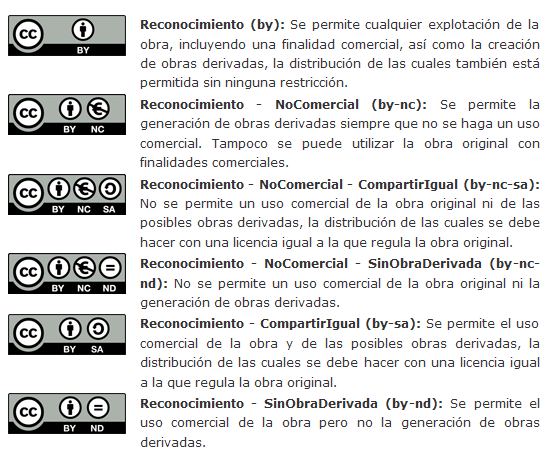

Importante:
¿Qué es Creative Commons?
Creative Commons ofrece licencias gratuitas que permiten a los artistas proteger sus derechos. Estas licencias son muy fáciles de usar y se adaptan perfectamente a un entorno digital. No son exclusivas y permiten al titular de los derechos -es decir al artista- autorizar el público a hacer uso de su música, especialmente cuando el uso es privado (descargas, copias...), mientras puede restringir si lo desea los usos comerciales, las transformaciones de la obra original o el grado de libertad (en el sentido de software libre).
¿Qué se entiende por música libre?
Por música libre se entiende música que no está registrada por ninguna sociedad de gestión de derechos (SGAE y similar). Los artistas de música libre eligen proteger sus derechos con el uso de licencias especiales y no exclusivas como las que ofrece Creative Commons o Arte Libre. Música libre no necesariamente significa música gratis o libre de todo derecho de autor. Más bien significa música con "algunos derechos reservados". La licencia elegida por el artista es la que determina cuales son los usos autorizados y en qué condiciones.
¿Qué instituciones utilizan Creative Commons?
-
http://wiki.creativecommons.org/Case_Studies
¿Cuáles son las distintas licencias Creative Commons y cuáles son las ventajas de cada una de ellas?
Estas autorizaciones no exclusivas son de uso fácil y adaptadas a los estándar de Internet. Permiten a los titulares de los derechos autorizar de antemano ciertos usos de la obra por parte del público, mientras pueden reservarse los usos comerciales, las obras derivadas y el grado de libertad en general (en el sentido de software libre).

Código Legal en México:
Aquí encontrarás el código legal que sustenta a las licencias Creative Commons.
Puedes conocer más acerca de Creative Commons Educational visitando: http://creativecommons.org.mx/ o http://creativecommons.org/
RadioUnicaribe usa exclusivamente audios producido por si mismo o con el previo consentimiento de sus autores e intérpretes, dando el reconocimiento moral que merecen sus creadores e intérpretes.
Cualquier duda o aclaración comuníquese con nosotros a través de nuestra sección "Contacto".
Si usted es el autor o intérprete de las canciones que se transmiten a través de RadioUnicaribe y ha cambiado su licencia a una con copyright puede solicitar que se retire, de lo contrario se asumirá que usted sigue dando el permiso a que RadioUnicaribe siga difundiendo su música, siempre sin fines de lucro.
Puedes conocer mas música con licencia Creative Commons a través de Jamendo o en Free Music Archive o efectos especiales en Freesound.